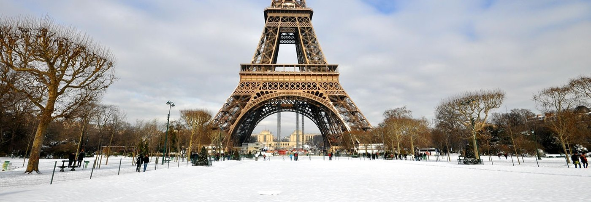
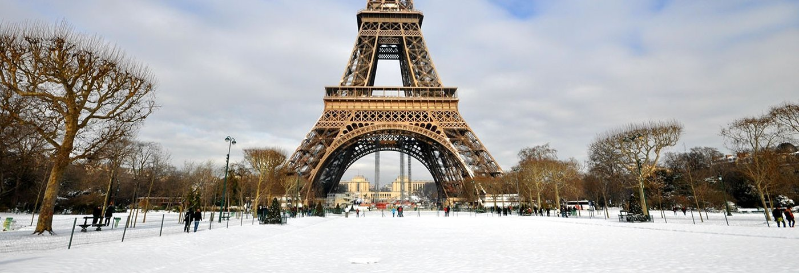

Grappig
Stijloefeningen (99) - Verassing
Posted on 12 juli 2011 by Molovich
- ‘Biertje dan maar?’ – ‘Graag.’ – ‘Vermoeiende dag?’ – ‘Nah. Naar de bilbiotheek geweest. Met de bus.’ – ‘Gaat daar een bus naartoe?’ – ‘De bus stopt op het stationsplein.’ – ‘Ah. En vandaar moet je lopen?’ – ‘Ja, ik was met mijn zoon. Die sliep in zijn kinderwagen.’ – ‘Goed zo. Lekker wandelweer?’ […]
Lees meer...
Meer van deze categorie...
Amuserend
Stijloefeningen (98) – Beroemd
Posted on 11 juli 2011 by Molovich
Vlak voordat ik de bus uitstap bedank ik de buschauffeur via de spiegel voor zijn diensten. Hij zwaait joviaal terug. ‘Mijn vrouw is een groot fan van u’, roept hij. ‘Doe haar de groeten’, zeg ik en stap uit. Centraal Station. Ik duw mijn zoon voort. Hij slaapt. Zich onbewust van de last die er […]
Lees meer...
Meer van deze categorie...
Boos
Stijloefeningen (97) – Freudiaans
Posted on 6 juli 2011 by Molovich
Ik stap uit de lul. Mijn aarsrivaal ligt te slapen in zijn kinderwagen. Wat een kutweer. De mensen zijn met zichzelf bezig, wat er hoogstwaarschijnlijk op neerkomt dat ze aan seks met hun moeder denken. Ik ben op weg naar de Openaarse Bilbiotheek van Amsterdam, om Stijloefeningen te lenen, een boek waarin Raymond Queneau op […]
Lees meer...
Meer van deze categorie...
Internationaal
Stijloefeningen (96) – Steenkolenfrans
Posted on 4 juli 2011 by Molovich
Le premier fevrièr 2011. Presque midi. Le bus s’arrête. Ligne 21. Place de Gare Centrale. Je marche au derrière d’un poussette. Mon fils dort. Je suis en route au Bibliothèque Public pour emprunteur Exercices de Style de Raymond Queneau. C’est un livre très dificile d’acquérir. Mais zut alors, quelle ravage ici! Il y a beaucoup […]
Lees meer...
Meer van deze categorie...
 
